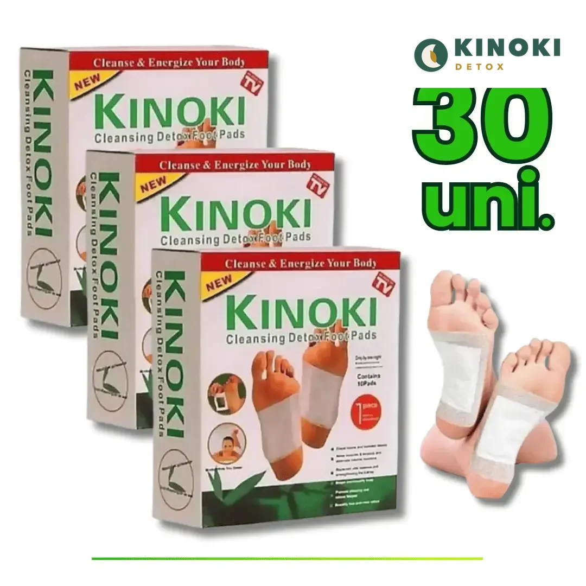
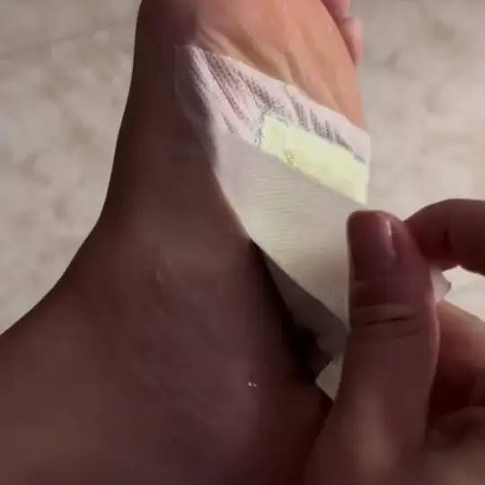
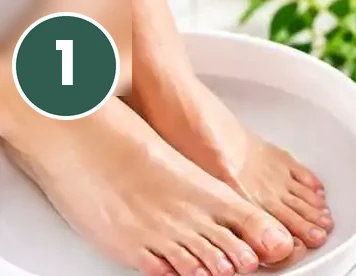
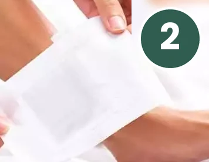
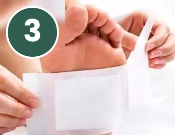
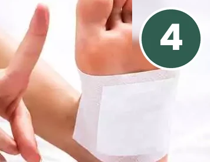
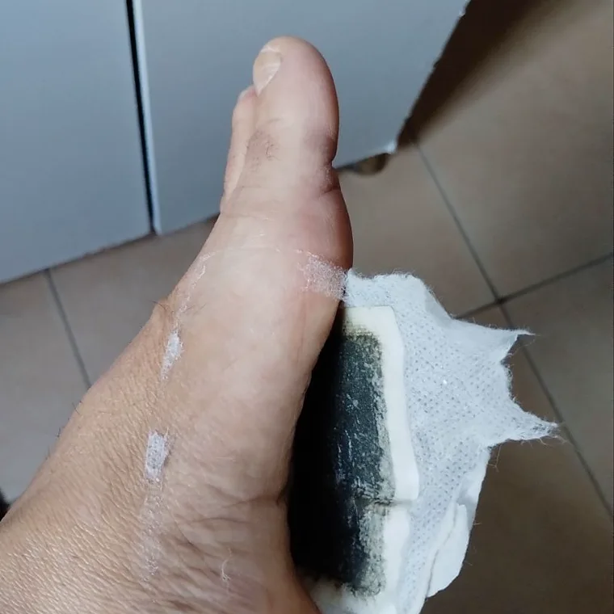
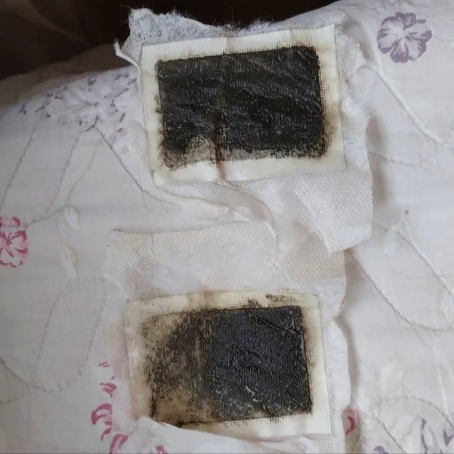
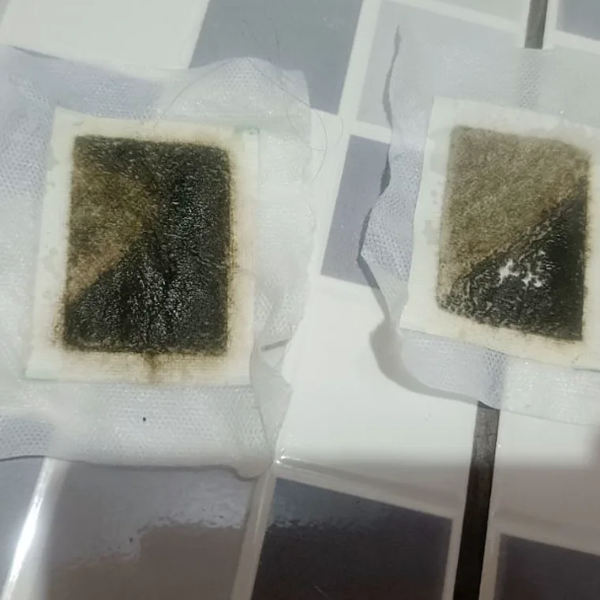
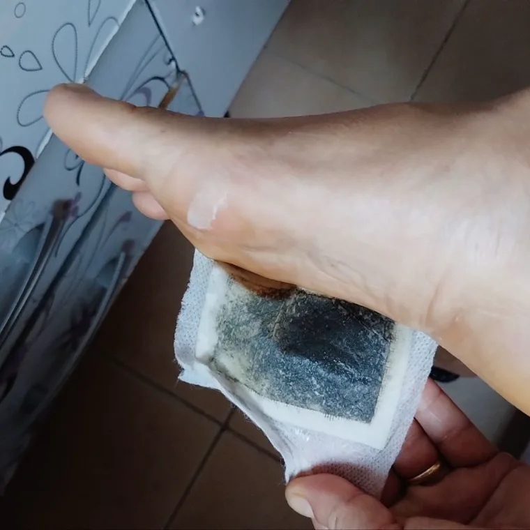

Para quem acorda com o corpo pesado mesmo tendo dormido. Cola na planta do pé antes de deitar, tira ao acordar, e ele sai escuro.
A fórmula Kinoki original: pó de bambu, turmalina e extratos vegetais na planta do pé, a noite inteira. Sem massagem, sem creme, sem mudar nada na sua rotina. Cada caixa traz 10 adesivos, ou seja, 5 pares.
O adesivo não resolve a causa de nada disto. É um ritual de cinco minutos antes de deitar, e é por isso que as pessoas continuam a usar.

Na tradição oriental, a planta do pé é o ponto de partida do relaxamento noturno. É lá que o adesivo fica a noite toda, aquecido pelo calor do próprio corpo.
De manhã sai escuro. É a reação dos ingredientes naturais ao calor e à humidade da noite, e é a parte em que ninguém acredita até ver.
Quatro coisas, na quantidade certa, num adesivo que usa uma vez e deita fora.
Quatro passos, cinco minutos antes de deitar.




Use antes de dormir, tire ao acordar. Sem massagem, sem creme, sem mudar nada na sua rotina.
Fotos reais de uso, sem edição e sem estúdio. É assim que o adesivo amanhece.




Trabalho 9 horas em pé no balcão da farmácia. Colei os dois adesivos na segunda-feira e no dia seguinte a sensação nas pernas era outra. Já estou na segunda semana.
O que mais me impressionou foi de manhã: o adesivo amanhece escuro. Não sei explicar direito, só sei que durmo melhor com ele do que sem.
Sou motorista, passo o dia inteiro sentado e chego em casa com a perna pesada. Coloco antes de dormir. Não é milagre, mas acordo melhor do que eu acordava.
O produto eu gostei. A entrega que demorou mais do que eu esperava, uns 9 dias. Mas comprei de novo, então já viu.
Minha esposa comprou para ela e eu acabei usando junto, por teimosia. Trabalho em obra, em pé desde as sete. Hoje é ela que pede para eu comprar mais.
Passo o dia sentada no escritório e à noite meu pé fica inchado. Depois que comecei a usar antes de dormir, acordo diferente. Já indiquei pra três colegas.
O que me pegou foi ver o adesivo de manhã, escuro daquele jeito. Peguei os 30 e ainda tenho bastante, uso dia sim, dia não. Chegou tudo lacrado.
Minha mãe tem 68 anos e reclamava que não conseguia dormir de tanto que a perna incomodava. Comprei pra ela e agora ela pede pra eu comprar de novo.
Cada caixa tem 10 adesivos, ou seja, 5 pares. Cada par é uma noite, um adesivo em cada pé. A caixa dá para 5 noites, 2 caixas dão para 10 noites e 3 caixas dão para 15 noites.
Escurece pelo calor e pela humidade natural do corpo durante a noite: é a reação esperada dos ingredientes. Não é nada que tenha saído de dentro de si. A intensidade varia de pessoa para pessoa e de noite para noite.
Pode. Há quem use todos os dias e há quem prefira dia sim, dia não. O que conta é usar sempre à mesma hora, antes de deitar.
A cola é hipoalergénica e sai sem puxar a pele. Para segurar a noite toda, o pé tem de estar lavado e bem seco, porque em pele húmida descola. Se tem alergia conhecida a adesivos, teste numa área pequena da primeira vez.
O adesivo é um produto de bem-estar: não trata, não cura e não substitui o que o seu médico indicou para essas condições. Muita gente que convive com dor no pé usa-o como ritual de relaxamento antes de dormir, e é assim que recomendamos usar. Se está em tratamento, fale com o seu médico antes.
Serve. É o mesmo adesivo para qualquer pé: a cola aguenta pé maior e a saqueta cobre a planta do pé inteira.
Entregamos em Luanda das 8h às 16h. Encomendas feitas até às 16h podem ser entregues no mesmo dia. Depois das 16h, escolhe receber amanhã ou noutra data. A entrega é grátis em Luanda.
Só paga quando recebe, em dinheiro ou por Multicaixa Express. Não pedimos nenhum pagamento antecipado.
Tem 7 dias a partir da entrega para devolver e nós devolvemos o seu dinheiro. Basta falar connosco pelo WhatsApp 935 317 863.
São 5 minutos antes de deitar. Se não for para si, devolvemos o seu dinheiro em 7 dias.
3 caixas por 16.500 Kz em vez de 22.500 Kz · 15 noites · entrega grátis em Luanda
ENCOMENDAR AGORA